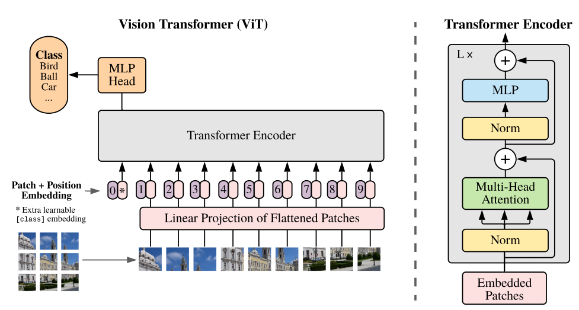
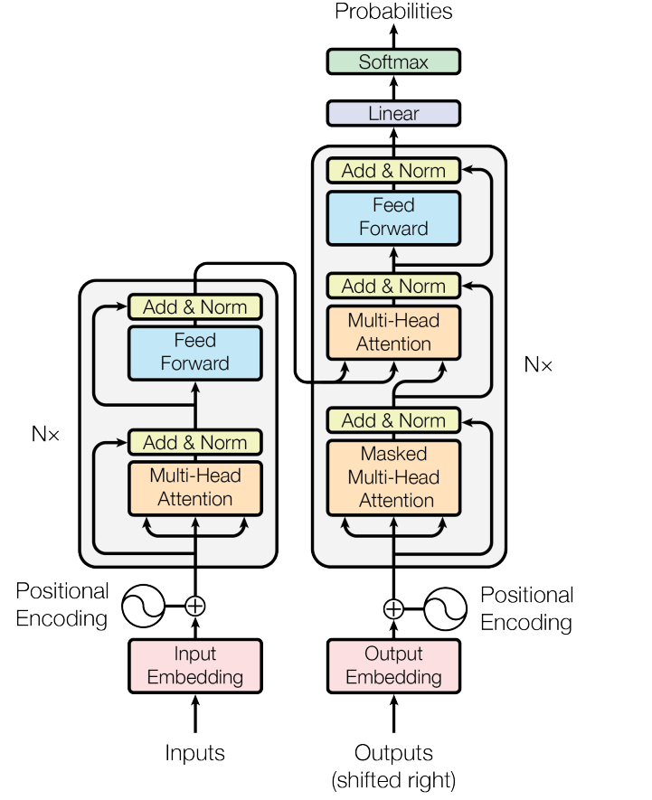
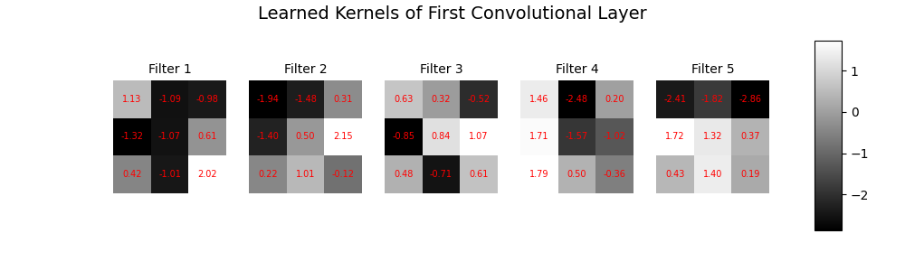
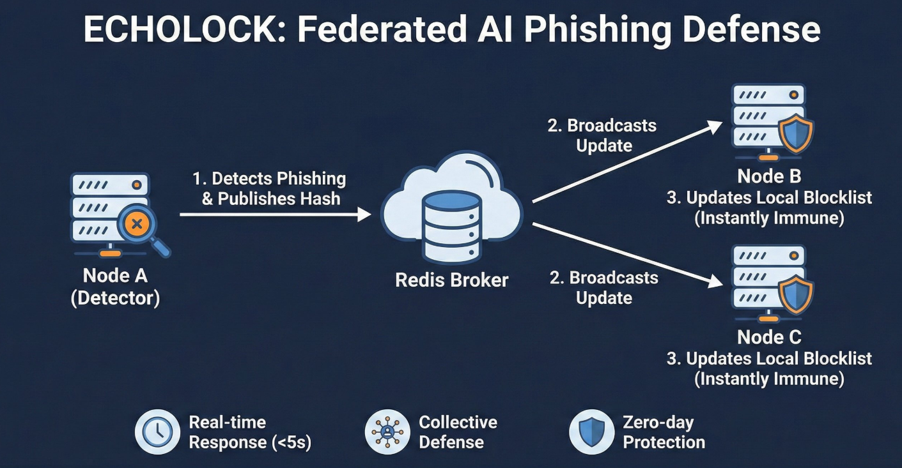

Projects

Vision Transformer on Tiny ImageNet, built from first principles

Seq2seq Transformer for symbolic differentiation

Convolutional VAE that generates human faces

CNN built from scratch using only numpy

Federated phishing detection with real time threat sharing